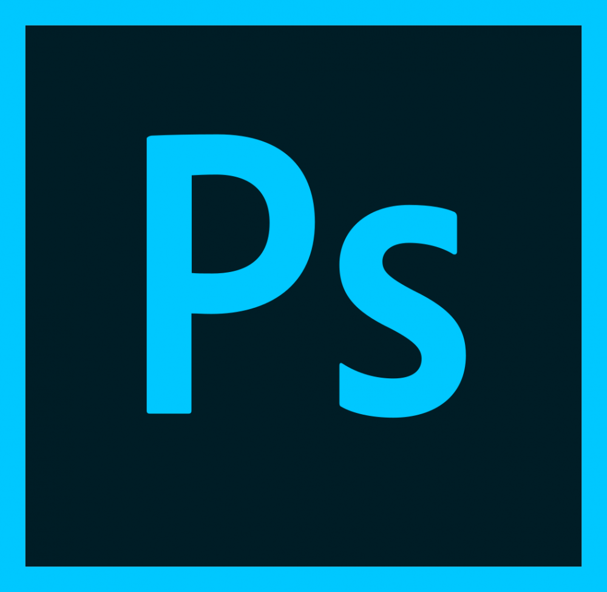
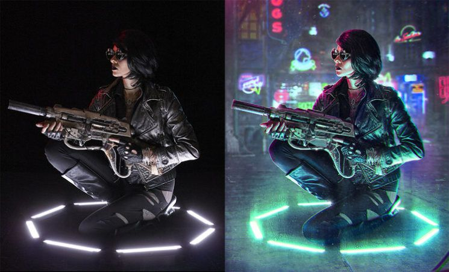
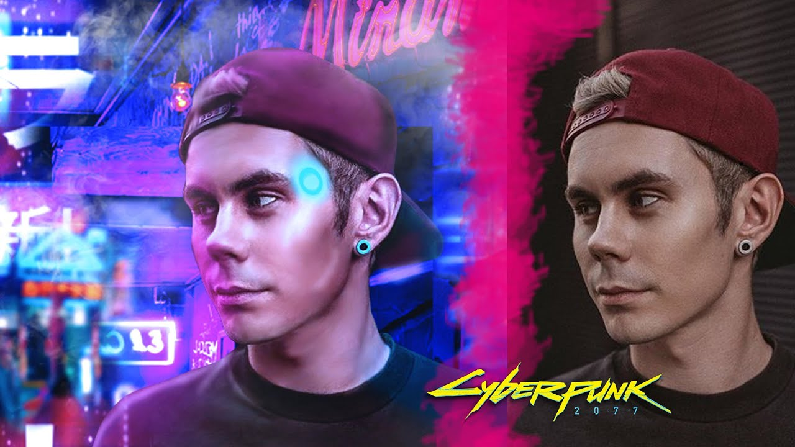
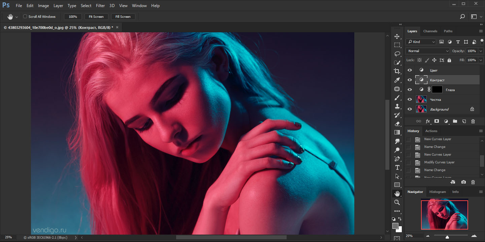

Я люблю обробляти фотографії в програмі Adobe Photoshop в стилі Кіберпанк
   Цікавим заняттям також є монтаж різних відеороликів.
Я користуюсь
програмами для монтажу як Sony Vegas i
After Effects


Колекція Pro Vegas вийшла 10 вересня 2007
року і поєднувала в
собі пакет програм
з: Vegas Pro 8.0, DVD Architect Pro
4.5 і Dolby Digital AC-3,
яке являло собою
програмне
забезпечення для кодування та
інтегроване середовище для всіх фаз
професійної
обробки відео, аудіо, DVD й роботі в
сфері
телерадіомовлення.
Завдяки цим інструментам користувач
міг
редагувати і обробляти такі формати як DV,
AVCHD, HDV, SD
/ HD-SDI,
а також всі формати XDCAM
в режимі реального часу.
Adobe After Effects — програм
не забезпечення
компанії Adobe Systems для редагування
відео і динамічних зображень,
розробки композицій (композітінг )
,
анімації і створення різних ефектів. Широко застосовується в обробці
знятого відеоматеріалу (корек
ція кольору, пост-продакшн ),
при створенні рекламних
роликів, музичних кліпів, у виробництві
німації (для телебачення і web), титрів для художніх і телевізійних
фільмів.